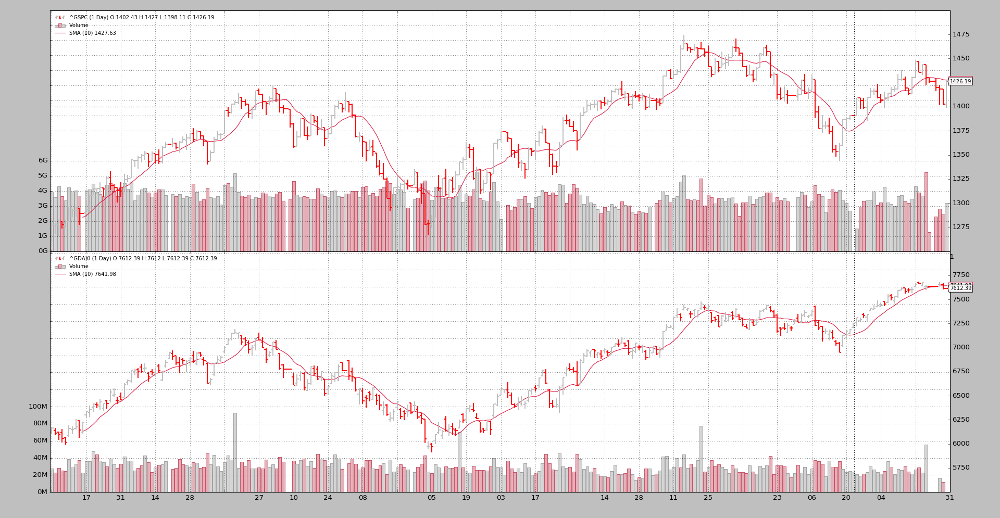

Synchronizing different markets¶
The more the usage the more the mix of ideas and unexpected scenarios that
backtrader has to face. And with each new one, a challenge to see if the
platform can live up to the expectations set forth when development started,
flexibility and ease of use were the targets and Python was chosen as the
cornerstone.
Ticket #76 raises the
question as to whether synchronizing markets with different trading calendars can
be done. Direct attempts to do so fail and the issue creator wonders why
backtrader is not looking at the date.
Before any answer is delivered some thought has to be put into:
- Behavior of indicators for the days which do not align
The answer to the latter is:
- The platform is as much as possible
dateandtimeagnostic and will not look at the contents of the fields to evaluate those concepts
Taken into account the fact that stock market prices are datetime series
the above can hold up true up to certain limits. In the case of multiple datas
the following design considerations apply:
- The 1st data added to
cerebrois thedatamaster- All other datas have to be time aligned/synchronized with it never being able to overtake (in
datetimeterms) thedatamaster
Putting together the 3 bullet points from above delivers the mix experienced by the issue creator. The scenario:
- Calendar Year:
2012- Data 0:
^GSPC(or S&P 500 for friends)- Data 1:
^GDAXI(or Dax Index for friends)
Running a custom script to see how the data is synchronized by backtrader:
$ ./weekdaysaligner.py --online --data1 '^GSPC' --data0 '^GDAXI'
And the output:
0001, True, data0, 2012-01-03T23:59:59, 2012-01-03T23:59:59, data1
0002, True, data0, 2012-01-04T23:59:59, 2012-01-04T23:59:59, data1
0003, True, data0, 2012-01-05T23:59:59, 2012-01-05T23:59:59, data1
0004, True, data0, 2012-01-06T23:59:59, 2012-01-06T23:59:59, data1
0005, True, data0, 2012-01-09T23:59:59, 2012-01-09T23:59:59, data1
0006, True, data0, 2012-01-10T23:59:59, 2012-01-10T23:59:59, data1
0007, True, data0, 2012-01-11T23:59:59, 2012-01-11T23:59:59, data1
0008, True, data0, 2012-01-12T23:59:59, 2012-01-12T23:59:59, data1
0009, True, data0, 2012-01-13T23:59:59, 2012-01-13T23:59:59, data1
0010, False, data0, 2012-01-17T23:59:59, 2012-01-16T23:59:59, data1
0011, False, data0, 2012-01-18T23:59:59, 2012-01-17T23:59:59, data1
...
As soon as 2012-01-16 the trading calendars diverge. The data0 is the
datamaster (^GSPC) and even if data1 (^GDAXI) would have a bar
to deliver on 2012-01-16, this wasn’t a trading day for the S&P 500.
The best that backtrader can do with the aforementioned design restrictions
when the next trading day for the ^GSPC comes in, the 2012-01-17 is
deliver the next not yet processed date for ^GDAXI which is the
2012-01-16.
And the synchronization problem accumulates with each diverging day. At the end
of 2012 it looks like follows:
...
0249, False, data0, 2012-12-28T23:59:59, 2012-12-19T23:59:59, data1
0250, False, data0, 2012-12-31T23:59:59, 2012-12-20T23:59:59, data1
The reason should be obvious: the Europeans trade more days than the Americans.
In the Ticket #76 <https://github.com/mementum/backtrader/issues/76> the
poster shows what zipline does. Let’s look at the 2012-01-13 -
2012-01-17 conundrum:
0009 : True : 2012-01-13 : close 1289.09 - 2012-01-13 : close 6143.08
0010 : False : 2012-01-13 : close 1289.09 - 2012-01-16 : close 6220.01
0011 : True : 2012-01-17 : close 1293.67 - 2012-01-17 : close 6332.93
Blistering barnacles! The data for 2012-01-13 has been simply
duplicated without apparently asking the user for permission. Imho, this
shouldn’t be because the end user of the platform cannot undo this spontaneous
addition.
Note
Except for a brief look at zipline, the author doesn’t know if
this is the standard behavior, configured by the script developer and
if it can be undone
Once we have seen that the others let’s try again with backtrader using
the accumulated wisdom: the Europeans trade more often than the
Americans. Let’s reverse the roles of ^GSPC and ^GDAXI and see the
outcome:
$ ./weekdaysaligner.py --online --data1 '^GSPC' --data0 '^GDAXI'
The output (skipping to 2012-01-13 directly):
...
0009, True, data0, 2012-01-13T23:59:59, 2012-01-13T23:59:59, data1
0010, False, data0, 2012-01-16T23:59:59, 2012-01-13T23:59:59, data1
0011, True, data0, 2012-01-17T23:59:59, 2012-01-17T23:59:59, data1
...
Blistering barnacles again! backtrader has also duplicated the
2012-01-13 value for data1 (in this case ^GSPC) as a match for
data0 (now ^GDAXI) delivery of 2012-01-16.
And even better:
- Synchronization is reachieved with the next date:
2012-01-17
The same re-synchronization is seen again soon:
...
0034, True, data0, 2012-02-17T23:59:59, 2012-02-17T23:59:59, data1
0035, False, data0, 2012-02-20T23:59:59, 2012-02-17T23:59:59, data1
0036, True, data0, 2012-02-21T23:59:59, 2012-02-21T23:59:59, data1
...
Followed by not such an easy re-sync:
...
0068, True, data0, 2012-04-05T23:59:59, 2012-04-05T23:59:59, data1
0069, False, data0, 2012-04-10T23:59:59, 2012-04-09T23:59:59, data1
...
0129, False, data0, 2012-07-04T23:59:59, 2012-07-03T23:59:59, data1
0130, True, data0, 2012-07-05T23:59:59, 2012-07-05T23:59:59, data1
...
Such episodes keep repeating until the last bar for ^GDAXI is delivered:
...
0256, True, data0, 2012-12-31T23:59:59, 2012-12-31T23:59:59, data1
...
The reason for this synchronization issues is that backtrader does NOT
duplicate the data.
Once the
datamasterhas delivered a new bar the otherdatasare asked to deliverIf no bar can be delivered for the current
datetimeof thedatamaster(because it, for example, would be overtaken) the next best data is, so to say, re-deliveredAnd this is a bar with an already seen
date
Proper Synchronization¶
But not all hope is lost. backtrader can deliver. Let’s use
filters. This piece of technology in backtrader allows manipulating the
data before it hits the deepest parts of the platform and for example
indicators are calculated.
Note
delivering is a perception matter and therefore what
backtrader delivers may not be what the recipient is expecting as
the delivery
The actual code
from __future__ import (absolute_import, division, print_function,
unicode_literals)
import datetime
class WeekDaysFiller(object):
'''Bar Filler to add missing calendar days to trading days'''
# kickstart value for date comparisons
lastdt = datetime.datetime.max.toordinal()
def __init__(self, data, fillclose=False):
self.fillclose = fillclose
self.voidbar = [float('Nan')] * data.size() # init a void bar
def __call__(self, data):
'''Empty bars (NaN) or with last close price are added for weekdays with no
data
Params:
- data: the data source to filter/process
Returns:
- False (always): this filter does not remove bars from the stream
'''
dt = data.datetime.dt() # current date in int format
lastdt = self.lastdt + 1 # move the last seen data once forward
while lastdt < dt: # loop over gap bars
if datetime.date.fromordinal(lastdt).isoweekday() < 6: # Mon-Fri
# Fill in date and add new bar to the stack
if self.fillclose:
self.voidbar = [self.lastclose] * data.size()
self.voidbar[-1] = float(lastdt) + data.sessionend
data._add2stack(self.voidbar[:])
lastdt += 1 # move lastdt forward
self.lastdt = dt # keep a record of the last seen date
self.lastclose = data.close[0]
data._save2stack(erase=True) # dt bar to the stack and out of stream
return True # bars are on the stack (new and original)
The test script is already fitted with the capability to use it:
$ ./weekdaysaligner.py --online --data0 '^GSPC' --data1 '^GDAXI' --filler
With --filler the WeekDaysFiller is added to both data0 and
data1. And the output:
0001, True, data0, 2012-01-03T23:59:59, 2012-01-03T23:59:59, data1
...
0009, True, data0, 2012-01-13T23:59:59, 2012-01-13T23:59:59, data1
0010, True, data0, 2012-01-16T23:59:59, 2012-01-16T23:59:59, data1
0011, True, data0, 2012-01-17T23:59:59, 2012-01-17T23:59:59, data1
...
The 1st conundrum at 2012-01-13 - 2012-01-17 is gone. And the entire
set is synchronized:
...
0256, True, data0, 2012-12-25T23:59:59, 2012-12-25T23:59:59, data1
0257, True, data0, 2012-12-26T23:59:59, 2012-12-26T23:59:59, data1
0258, True, data0, 2012-12-27T23:59:59, 2012-12-27T23:59:59, data1
0259, True, data0, 2012-12-28T23:59:59, 2012-12-28T23:59:59, data1
0260, True, data0, 2012-12-31T23:59:59, 2012-12-31T23:59:59, data1
Something worth noticing:
With
^GSPCasdata0we had250lines (the index traded250days in2012)With
^GDAXIwedata0had256lines (the index traded256days in2012)And with the
WeekDaysFillerin place the length of both datas has been extended to260Adding
52*2(weekends and days in a weekend), we would end up with364. The remaining day until the regular365days in a year was for sure a Saturday or a Sunday.
The filter is filling with NaN values for the days in which no trading
took place for the given data. Let’s plot it:
$ ./weekdaysaligner.py --online --data0 '^GSPC' --data1 '^GDAXI' --filler --plot

Filled days are quite obvious:
- The gap in between bars is there
- The gap is even more obvious for the volume plot
A 2nd plot will try to answer the question at the top: what happens with
indicators?. Remember that the new bars have been given a value of NaN
(that’s why they are not displayed):
$ ./weekdaysaligner.py --online --data0 '^GSPC' --data1 '^GDAXI' --filler --plot --sma 10
Re-blistering barnacles! The Simple Moving Average has broken the space time
continuum and jumps some bars with no solution of continuity. This is of course
the effect of filling up with Not a Number aka NaN: mathematic
operations no longer make sense.
If instead of NaN the last seen closing price is used:
$ ./weekdaysaligner.py --online --data0 '^GSPC' --data1 '^GDAXI' --filler --plot --sma 10 --fillclose
The plot looks a lot nicer with a regular SMA for the entire 260 days
Conclusion¶
Synchronizing two instruments with different trading calendars is a matter of
making decisions and compromises. backtrader needs time aligned data to
work with multiple datas and different trading calendars don’t help.
The use of the WeekDaysFiller described here can alleviate the situation
but it is by no means a universal panacea, because with which values to fill is
a matter of long and prolonged consideration.
Script Code and Usage¶
Available as sample in the sources of backtrader:
$ ./weekdaysaligner.py --help
usage: weekdaysaligner.py [-h] [--online] --data0 DATA0 [--data1 DATA1]
[--sma SMA] [--fillclose] [--filler] [--filler0]
[--filler1] [--fromdate FROMDATE] [--todate TODATE]
[--plot]
Sample for aligning with trade
optional arguments:
-h, --help show this help message and exit
--online Fetch data online from Yahoo (default: False)
--data0 DATA0 Data 0 to be read in (default: None)
--data1 DATA1 Data 1 to be read in (default: None)
--sma SMA Add a sma to the datas (default: 0)
--fillclose Fill with Close price instead of NaN (default: False)
--filler Add Filler to Datas 0 and 1 (default: False)
--filler0 Add Filler to Data 0 (default: False)
--filler1 Add Filler to Data 1 (default: False)
--fromdate FROMDATE, -f FROMDATE
Starting date in YYYY-MM-DD format (default:
2012-01-01)
--todate TODATE, -t TODATE
Ending date in YYYY-MM-DD format (default: 2012-12-31)
--plot Do plot (default: False)
The code:
from __future__ import (absolute_import, division, print_function,
unicode_literals)
import argparse
import datetime
import backtrader as bt
import backtrader.feeds as btfeeds
import backtrader.indicators as btind
import backtrader.utils.flushfile
# from wkdaysfiller import WeekDaysFiller
from weekdaysfiller import WeekDaysFiller
class St(bt.Strategy):
params = (('sma', 0),)
def __init__(self):
if self.p.sma:
btind.SMA(self.data0, period=self.p.sma)
btind.SMA(self.data1, period=self.p.sma)
def next(self):
dtequal = (self.data0.datetime.datetime() ==
self.data1.datetime.datetime())
txt = ''
txt += '%04d, %5s' % (len(self), str(dtequal))
txt += ', data0, %s' % self.data0.datetime.datetime().isoformat()
txt += ', %s, data1' % self.data1.datetime.datetime().isoformat()
print(txt)
def runstrat():
args = parse_args()
fromdate = datetime.datetime.strptime(args.fromdate, '%Y-%m-%d')
todate = datetime.datetime.strptime(args.todate, '%Y-%m-%d')
cerebro = bt.Cerebro(stdstats=False)
DataFeed = btfeeds.YahooFinanceCSVData
if args.online:
DataFeed = btfeeds.YahooFinanceData
data0 = DataFeed(dataname=args.data0, fromdate=fromdate, todate=todate)
if args.data1:
data1 = DataFeed(dataname=args.data1, fromdate=fromdate, todate=todate)
else:
data1 = data0.clone()
if args.filler or args.filler0:
data0.addfilter(WeekDaysFiller, fillclose=args.fillclose)
if args.filler or args.filler1:
data1.addfilter(WeekDaysFiller, fillclose=args.fillclose)
cerebro.adddata(data0)
cerebro.adddata(data1)
cerebro.addstrategy(St, sma=args.sma)
cerebro.run(runonce=True, preload=True)
if args.plot:
cerebro.plot(style='bar')
def parse_args():
parser = argparse.ArgumentParser(
formatter_class=argparse.ArgumentDefaultsHelpFormatter,
description='Sample for aligning with trade ')
parser.add_argument('--online', required=False, action='store_true',
help='Fetch data online from Yahoo')
parser.add_argument('--data0', required=True, help='Data 0 to be read in')
parser.add_argument('--data1', required=False, help='Data 1 to be read in')
parser.add_argument('--sma', required=False, default=0, type=int,
help='Add a sma to the datas')
parser.add_argument('--fillclose', required=False, action='store_true',
help='Fill with Close price instead of NaN')
parser.add_argument('--filler', required=False, action='store_true',
help='Add Filler to Datas 0 and 1')
parser.add_argument('--filler0', required=False, action='store_true',
help='Add Filler to Data 0')
parser.add_argument('--filler1', required=False, action='store_true',
help='Add Filler to Data 1')
parser.add_argument('--fromdate', '-f', default='2012-01-01',
help='Starting date in YYYY-MM-DD format')
parser.add_argument('--todate', '-t', default='2012-12-31',
help='Ending date in YYYY-MM-DD format')
parser.add_argument('--plot', required=False, action='store_true',
help='Do plot')
return parser.parse_args()
if __name__ == '__main__':
runstrat()


{kind=link}
{kind=link}